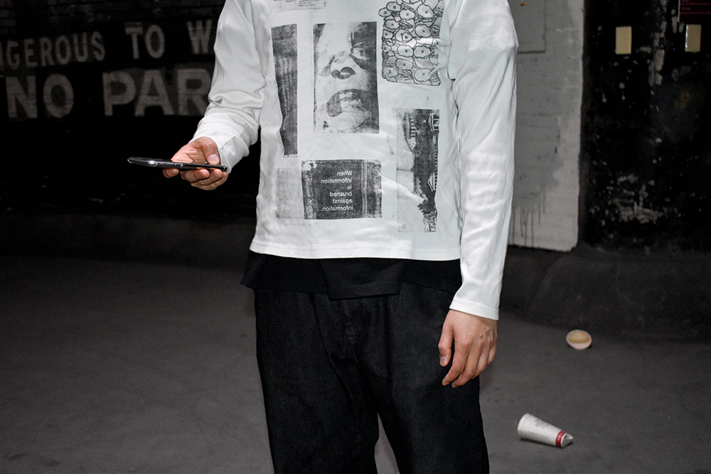

Poster design, lithography, print
see info
24" x 36" inkjet on matte coated paper
3 part project, self intiatied
This project is closely tied to Drawing with Xerox. The project explores the ideas of Marshall McLuhan’s The Medium is the Massage, form as content; spanning over a varitey of medium all starting from the book itself. A poster was created from the tiling of the whole book. Then printed onto shirts on a rolling press with a xerox gum tranfer. The shirts were then later worn by models and photographed, and then put back into a publication.
This project talks about how medium affects the way content is looked at, at the same time exploring different methods of printing the same thing.
part a: poster

part b: appearl, lithography



part c: editorial, art direction (documentation in process)